| Document | Productrapport |
| Opdrachtnemer | Hogeschool van Arnhem en Nijmegen |
| Opleidingsdeel | Hoofdfase ESE |
| Vakcode | PRJ4 |
| Projectgroep | ES2-y5 |
| Projectleden | Koen Beckers, Erik de Boer, Léon Gersen, Maarten Kompanje & Tim Rijssemus. |
| Opdrachtgever | Ruud Elsinghorst |
| Beoordelaar | Nico Bouwman |
| Datum en plaats | 21-05-2013, Arnhem |
| Versie | 1.0 |
The assignment is to control a robot called from a graphical user interface. There will also be a graphical simulator that can be used by the User Interface. The simulator will have the same options (including concerns sensors) as the real Roomba. This robot is a vacuum cleaner. It can detect objects and thereby avoid objects. The robot comprises a variety of sensors.
The programming of the user interface and the simulator have been written in C++. The transmission and reception of data and the softening thereof is programmed in Rose Real Time.
All requirements are realized. There have been many problems with programming in Rose RealTime. This is because in our group had no experience of working in this program. The simulator works in conjunction with the User Interface.
We thought it was a fun project. There was a lot of challenge , as no one had before programmed with Rose RealTime. Here we take a lot of experience. We are pleased to be working within the group.
Terugkijkend op dit project was dit een lastig maar geslaagd project. We hebben het allen als zeer leerzaam ervaren om dieper in te gaan op het programmeren in C++ en met name het gebruik van Rose Real Time. Bij aanvang van dit project had nog geen van ons ervaring met Rose Real Time. De groep heeft over veel verschillende onderwerpen kennis opgedaan, zoals het opzetten van een TCP/IP verbinding of het programmeren van een seriële communicatie in Rose Real Time.
Het is goed om te zien dat de User Interface en de simulator werken in samenwerking met Rose Real Time.
Een verbeterpunt voor een volgend project is om alle opdrachten beter in te plannen en ons aan het tijdschema te houden. Het kwam vaak voor dat we achter liepen op schema. Dit kwam mede doordat onze projectlid (Stefan Broekman) met de opleiding stopte. Uiteindelijk is dit door hard werken geen tijdsprobleem geworden.
We kijken terug op een geslaagd project en zijn tevreden met het product dat we hebben opgeleverd. Dit is onder andere mogelijk geweest door een goede samenwerking.
| Datum | Opwaarderder | Revisie | Commentaar |
|---|---|---|---|
| 04-06-2013 | Maarten Kompanje | 0.9 | Conceptrapport |
| 18-06-2013 | Léon Gersen | 1.0 | Eindversie |
N.b: (sub)revisies en revisies voor versie 0.9 (conceptrapport) zijn niet opgenomen.
Dit document is bedoeld om uitleg en inzicht te geven over het product dat deze porjectgroep heeft opgeleverd. De opdracht luid als volgt: 'Lever een werkend prototype, van een Roombacontroller, die kan worden gebruikt om een iRobot Roomba robotstofzuiger mee te besturen'.
De opdrachtgever is de heer Ruud Elsinghorst, de contactpersoon met de HAN is Nico Bouwman. De leden van projectgroep 5 van de ES2 (opleiding Embedded Systems Engineering) klas zijn verantwoordelijk voor het uitvoeren van dit project.
In dit document wordt uitgelegd hoe deze Roomba geprogrammeerd is met de hierbij behorende User Interface en Roomba simulator. Hierbij is veelal gebruik gemaakt van de programmeeromgeving Rose Real Time. Deze robotstofzuiger gaat rijden zodra deze het startsignaal krijgt. Onderweg zuigt de robot alles op wat hij tegen komt. Zodra de robot een object, zoals een muur of een tafel, raakt draait hij een aantal graden en vervolgt hij zijn weg. Als de stofzuiger klaar is keert hij terug naar zijn dock waar de accu weer volgeladen wordt.
De projectgroep heeft een User Interface ontworpen waarmee de Roomba zelf te bedienen is. Ook beschikt het programma over andere onderdelen zoals het uitlezen van verschillende sensoren, zoals het laadniveau van de accu of de hoeveelheid vuil in de opslag van de stofzuiger. Met deze User Interface is ook de simulator aan te sturen. De simulator heeft dezelfde opties als de ‘echte’ Roomba.
Het doorsturen van de informatie gebeurd met de software Rose Real Time. De projectgroep had bij aanvang van dit project geen ervaring met deze programmeeromgeving. Het was dan ook een grote uitdaging om met deze software te gaan werken.
Naast deze inleiding is dit verslag in 5 hoofdstukken opgebouwd. In het tweede hoofdstuk worden de functionele specificaties van het project beschreven. In dit hoofdstuk is te vinden wat het systeem moet doen, en hoe de gebruiker het systeem ziet. Daarnaast worden functionele blokken en connecties daartussen gedefineerd. In hoofdstuk 3 wordt het technisch ontwerp uit de doeken gedaan. Dit hoofdstuk bevat blok- en hiërarchische schema's, maakt een onderscheid tussen hardware en software en weegt alternatieve mogelijkheden tegen elkaar af. In hoofdstuk 4 wordt de realisatie van het project beschreven. Dit deel van het verslag bevat detailontwerpen, beschrijvingen van toegepaste oplossingen en onderdelen en gemaakte berekeningen. Het testen van het project wordt in het vijfde hoofdstuk toegelicht. Naast een beschrijving van de testopzet en testresultaten komen tests per module en integratietest aan bod. In hoofdstuk 6 zijn conclusies en aanbevelingen toegevoegd, en worden product aanvullingen, uitgebreidingen en verbeteringen behandeld.
Dit hoofdstuk, het functioneel ontwerp, bevat een korte beschrijving van de hoofdfunctie van het te ontwerpen system. Er wordt een globaal input-output schema (IPO) opgesteld, en de functionele specificatie wordt tot in details beschreven.
Dit document heeft als doel het verkrijgen van een complete specificatie van het te ontwikkelen product. Er wordt duidelijk gemaakt wat de functionele werking van de nieuwe besturing is. Een onderdeel hiervan is een beschrijving van de gebruikersinterface en een ontwerp van de handleiding. Het functioneel ontwerp moet voldoen aan de eisen en wensen van de opdrachtgever.
De Roomba moet het volgende kunnen:
De hoofdfunctie van de Roomba is het schoonmaken van een ruimte zonder obstakels te raken of ergens van af te vallen. Als de Roomba klaar is met dit proces gaat deze terug naar zijn beginpunt. De instellingen kunnen op de computer aangepast worden.
De Roomba bevat de volgende subfuncties;
Het project bestaat uit een aantal functionele blokken waartussen onderlinge connecties bestaan. Deze blokken hebben betrekking op ingevoerde en uitgevoerde gegevens, en zijn afgebeeld in onderstaande figuur.
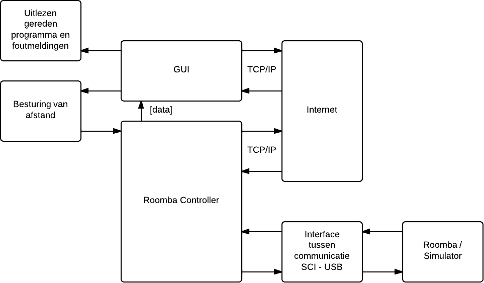 Afbeelding 2.2 - IPO schema RoombaIn het onderstaande schema is een globaal IPO schema van de sensoren en actuatoren weergegeven. Hier wordt verder op in gegaan in het technisch ontwerp.
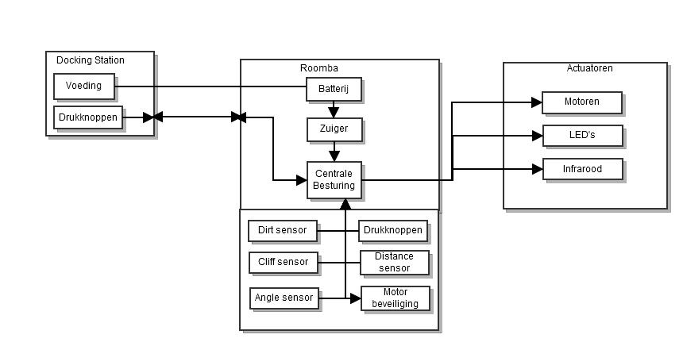 Afbeelding 2.3 - Globaal IPO schema van de sensoren en actuatorenIn dit hoofdstuk wordt ingegaan op de functionaliteit van het product. Het product is een werkend prototype van een Roombacontroller, die gebruikt kan worden om een Irobot Roomba robotstofzuiger te besturen. Deze moet aan de onderstaande eisen voldoen.
Functionele eisen:De GUI moet een heel aantal zaken bevatten. Zo zijn er instelling voor de Roomba, moet de besturing geregeld kunnen worden met behulp van de sensoren. Deze worden overzichtelijk in de onderstaande grafiek weergegeven. De GUI wordt ontworpen in QT Creator in C++.
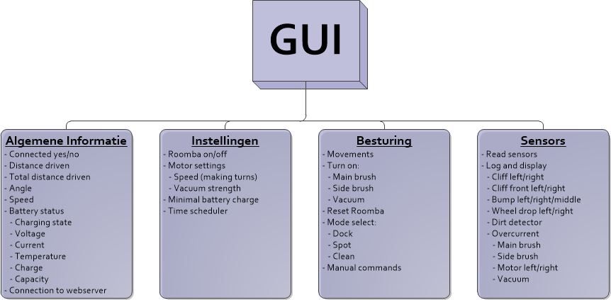 Afbeelding 2.4 - Overzicht User InterfaceDe gebruikershandleiding is bedoeld om de gebruiker van het product duidelijk te maken hoe deze gebruikt moet worden, wat te doen bij storing en hoe deze te onderhouden.
Als onderdeel van de functionele specificatie wordt er een eerste aanzet van de user manual voor opdrachtgever en/of ontwikkelaars ontworpen. Hoe moet de besturing worden gebruikt? Ook moet deze gebruikershandleiding worden afgestemd met de opdrachtgever.
Door deze user manual te definiëren, krijgen klant/opdrachtgever en ontwikkelaars een goed beeld van het te ontwikkelen systeem en kan worden nagegaan of de functionele specificatie inderdaad compleet is. Een uitgebreide user manual volgt later in het project.
Om het meeste uit de batterij te halen raad de projectgroep u aan om de Roomba altijd op te bergen terwijl deze met het laadstation verbonden is.
Het beste is om de batterij volledige op te laden voordat u een schoonmaak ronde begint. Een volle batterij kan één schoonmaakronde volhouden.
Als de Roomba voor de eerste keer wordt opgeladen, of een lange tijd niet is opgeladen geweest, zal de Roomba een speciale 16 uur durende laadcyclus starten. Dit verlengt de levensduur van de batterij.
Simulator:/* */
Besturing:/* */
User interface:/* */
Er kunnen zich complicaties voordoen tijdens het gebruik van het apparaat. In de officiële user manual zal de gebruiker zo goed mogelijk proberen te begeleid worden om deze eventuele problemen op te lossen. Bij een probleem zullen we de gebruiker door middel van een overzichtelijke tabel, dat je hieronder kunt vinden, eerst zelf een aantal standaard controles laten uitvoeren.
Dit document is gemaakt om duidelijkheid te creëren over hoe het systeem in elkaar zit. Zo wordt het Hiërarchisch schema beschreven en laat de groep zien hoe het systeem er technisch uitziet in het Architectuur schema. Ten slot worden de Input-Proces-Output (Invoer-Verwerking-Uitvoer) systemen weergegeven. Hierin wordt beschreven hoe bepaalde signalen worden verwerkt en wat er dan uiteindelijk met deze signalen gedaan wordt.
Het schema hieronder is het schema van het gehele systeem. Het gehele systeem bestaat uit het Docking station en de Roomba.
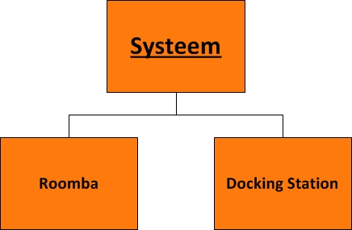Het schema hieronder is het schema van het Docking station. De volgende dingen zijn aanwezig op het Docking station: Infrarood om te zenden naar de Roomba waardoor deze het docking station terug kan vinden. Laden voor het opladen van de Roomba.
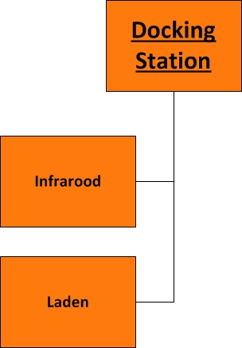In dit hoofdstuk worden de verschillende typen hardware besproken die gebruikt worden in dit project.
De bump sensor detecteert of de Roomba een object heeft geraakt.
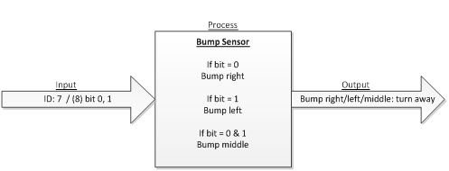De wheel drop geeft aan of een van de of beide wielen van de Roomba een hoogteverschil hebben.
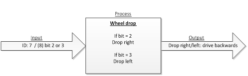De cliff sensoren geven aan of er een object voor de Roomba ligt.
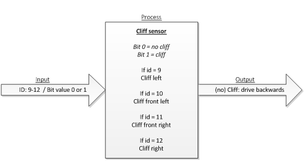De cliff signals geven aan hoe diep het object voor de Roomba ligt.
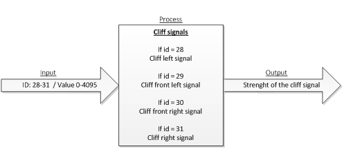Overcurrent geeft aan of een van de motoren of meerdere motoren een overcurrent hebben.
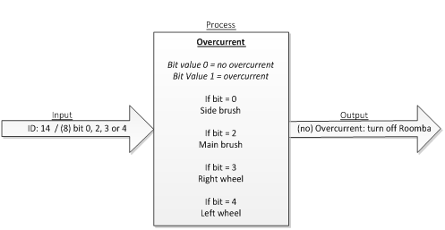Motor current geeft van elke motor aan of deze vooruit, achteruit of uit staat.
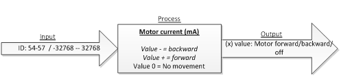De dirt detector geeft aan hoeveel viezigheid zich op de grond bevind.
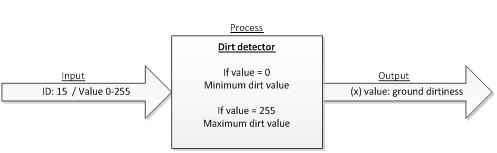De infrared(infrarood) sensor detecteert of het signalen van het docking station krijgt en hoe sterk deze zijn.
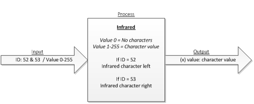De buttons detecteren welke knop is ingedrukt en hoelang deze zijn ingedrukt.
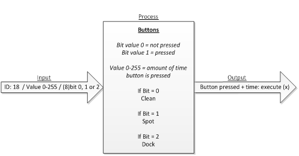Door de distance(afstand) op te vragen geeft de Roomba de afgelegde afstand (in mm) terug.
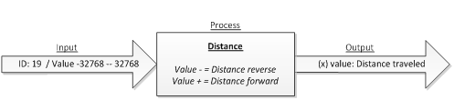Door de angle op te vragen geeft de Roomba de afgelegde draaiing (in graden) terug.
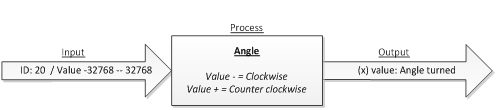Door de voltage op te vragen geeft de Roomba het huidige voltage (in mV) terug.
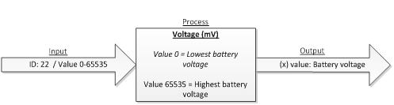Door de current op te vragen geeft de Roomba aan of er stroom (in mA) in of uit vloeit en hoeveel dit is.
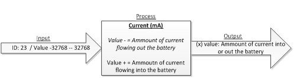Door de charging state op te vragen geeft de Roomba huidige oplaad status terug.
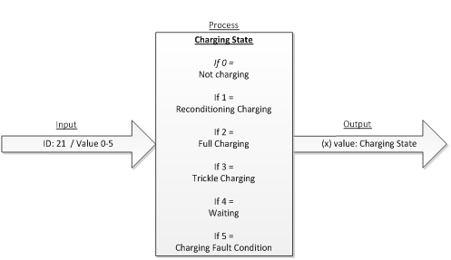Door de temperatuur op te vragen geeft de Roomba aan hoe warm de batterij is.
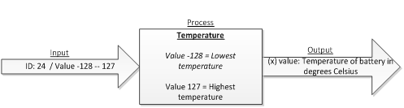Door de battery charge op te vragen geeft de Roomba aan hoe vol de batterij is (in mAh).
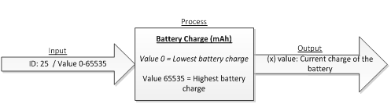Door de battery capacity op te vragen geeft de Roomba aan wat de geschatte laadcapaciteit is. (in mAh).
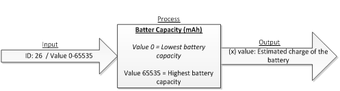Door de stasis op te vragen geeft de Roomba of er vooruitgang geboekt wordt.
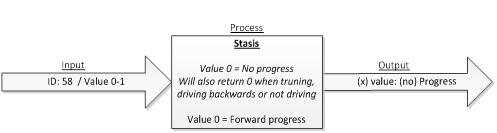Het doel van de realisatiefase is om een werkend eindproduct te krijgen. Alle gebruikte onderdelen die zijn toegepast in dit project worden hierin beschreven. Deze onderdelen zijn Rose RealTime, de User Interface en de Simulator.
Een TCP/IP verbinding is een netwerkprotocol om via het netwerk verbinding met een andere computer te krijgen. Deze verbinding wordt gebruikt om de User Interface te koppelen met het systeem waar Rose RealTime op draait. Het state diagram van de TCP/IP capsule ziet er als volgt uit:
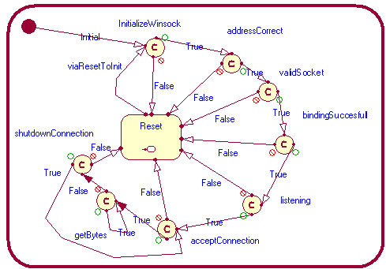Als eerste wordt de Winsock geïnitialiseerd. Dit zorgt voor verbinding tussen en TCP/IP en Windows. Er wordt gekeken of de opgegeven poort en het lokale adres correct is(adressCorrect). Nu wordt er gekeken of er gebruik wordt gemaakt van een IPv4v of IPv6(ValidSocket) verbinding. De verbinding is nu succesvol(bindingSuccesfull). Nadat de socket is geboden aan een IP-adres en een poort moet de moet de verbinding worden gelegd. Dit gebeurd in listening. Als deze verbinding correct is wordt de verbinding geaccepteerd(acceptConnection). De data wordt nu in getBytes binnengehaald. Dit choise point zit in een lus om alle data die binnenkomt te ontvangen. Als de connectie nu beëindigd wordt komt deze in de Reset terecht, is dit niet het geval gaat deze weer naar het acceptConnection choise point. Als elk ander beschreven choise point de waarde false krijgt gaat deze terug naar de reset en wordt er een foutmelding weergegeven.
Voor het sturen van de informatie naar de Roomba wordt gebruik gemaakt van Seriële communicatie. Hierbij is gebruik gemaakt van een library (http://www.teuniz.net/RS-232/). In deze library staan verschillende functies waarvan de volgende functies zijn gebruikt:
int RS232_OpenComport(int comport_number, int baudrate)
Deze functie opent de COM-poort. Met comport_number kan de COM-poort gekozen worden.
| comport_number | COM-poort (Windows) |
|---|---|
| 0 | COM1 |
| 1 | COM2 |
| 2 | COM3 |
| 3 t/m 15 | COM4 t/m COM16 |
Baudrate krijgt het getal dat de baudrate moet zijn (bijvoorbeeld: 9600;)
int RS232_PollComport(int comport_number, unsigned char *buf, int size)
Met deze functie kunnen karakters worden ontvangen. comport_number is het nummer van de COM-poort zoals hierboven staat beschreven. Met de pointer *buf wordt de seriële data in de buffer gestopt. size bepaald de grote die de buffer maximaal mag zijn.
int RS232_SendBuf(int comport_number, unsigned char *buf, int size)
Met deze functie kunnen karakters verzonden worden. De variabelen hebben dezelfde functie als hierboven beschreven. Het verschil is dat de *buf gevuld wordt met data en serieel verstuurd wordt.
void RS232_CloseComport(int comport_number)
Deze functie sluit de seriële poort.
Het state diagram van door de seriële communicatie ziet er nou als volgt uit:
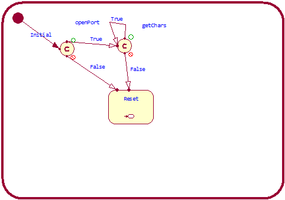Er wordt eerst gekeken of de COM-poort geopend kan worden. Vervolgens wordt de buffer binnengehaald die serieel verstuurd is (getChars). Deze choise point zit in een lus zodat constant gecontroleerd kan worden over er nieuwe data binnenkomt. In een ander deel van het programma zal de COM-poort gesloten worden.
Het programma is opgedeeld in een TCP/IP deel, een serieel deel en een Roomba deel. In dit Roomba deel is het verwerken van gegevens voor de Roomba verwerkt.
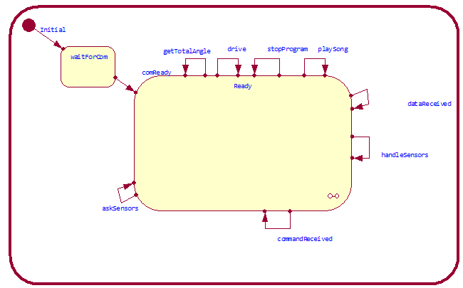Hier is de topCapsule van het Roomba deel te zien. Hierin wordt de status van de verschillende sensoren van de Roomba opgevraagd.
/* */Omdat er binnen het project, waaraan vijf projectgroepen deelnamen, slechts twee iRobot Roomba stofzuigers beschikbaar waren, moesten de praktijktests van de stofzuigerbesturing op een andere manier plaatsvinden. De projectgroep heeft daartoe een simulator ontwikkeld, waarin de verscheidene signalen die de Roomba ontvangt worden geïnterpreteerd. De simulator kan het traject dat de Roomba aflegt monitoren op een veel hogere snelheid dan de daadwerkelijke stofzuiger dat kan. Op deze manier kunnen reacties van de Roomba-besturing veel sneller worden getest en eventueel gecorrigeerd. Binnen de simulatoromgeving is een 'kamer' ingericht, waarin 'tafels' staan. Zodra de Roomba met een 'tafel' contact maakt, worden de juiste sensorwaarden bepaald en verstuurd. Hiervoor worden hoek- en impactberekeningen gemaakt, zodat ook de aangegeven hoeken precies kloppen. Het besturen van de simulator of het besturen van een daadwerkelijke stofzuiger maakt voor het aansturingsprogramma dus geen verschil.
Omdat de Roomba over verschillende methoden van motoraansturing beschikt, is er aan het begin een keuze gemaakt om een van deze manieren te selecteren, en de andere niet te gebruiken. De roomba kan aangestuurd worden doormiddel van PWM waarden voor beide wielen, een vectorwaarde voor snelheid met een hoek waarin deze vector moet worden uitgevoerd en een directe snelheidsinput in millimeter per seconde voor de wielen. De groep heeft hierin een afweging gemaakt. Het aansturen met een PWM waarde is niet relevant voor de besturing vanuit de ontwikkelde controller, en is daarnaast niet goed voor te stellen. Deze aansturingsmogelijkheid viel dus af. De aansturing met een vector is evengoed lastig in te schatten, aangezien het besturen van achterwaartse bewegingen fouten in de door de Roomba aangeleverde data oplevert. Daarmee valt deze mogelijkheid dus ook af. Er is dus gekozen voor mogelijkheid drie; aansturen doormiddel van directe snelheden. Deze aansturingsmethode is dus ook de basis geweest van het opbouwen van de simulator.
De tests voor het tekenen van van de Roomba in het simulatorscherm leverde een probleem op. Alle combinaties van voor en achterwaartse snelheden kwamen goed uit de tekentests, met uitzondering van een variabele (dus niet aan beide zijden gelijke) tegengestelde snelheid. Een dergelijke beweging zou een spiraal-achtige vorm opleveren, maar werd niet correct afgehandeld door de ontworpen berekeningen. Besloten is om deze uiterste edge-case niet te implementeren, aangezien achteruit rijden met de Roomba onhandig is. De Roomba beschikt namelijk niet over sensoren aan de achterzijde.
De simulator zelf is geschreven in C#, waarbij gebruikt is gemaakt van de Microsoft Visual Studio IDE. De tekeningen van de Roomba stofzuiger en andere elementen in de 'kamer' zijn basaal, en bestaan uit simpele - al dan niet ingekleurde - geometrische vormen. In de simulator is een tabel opgenomen waarin verschillende waarden kunnen worden weergegeven die op de daadwerkelijke stofzuiger overduidelijk zijn, maar die niet in de tekening zijn opgenomen, zoals de aan/uit status van de stofzuiger.
De simulatorcode bestaat uit een aantal onderdelen, waarvan het onderdeel 'serieel' als eerst ontwikkeld is. Dit onderdeel communiceerd met gebruik van een aantal standaard libraries met de COM-poort op de pc, waarvan vervolgens data kan worden gelezen. Deze data wordt vervolgens omgezet naar bruikbare gegevens, door deze door een Lookup-table te halen. In deze tabel staan gegevens over pakket-grootte en aan te roepen functies. Zodra de data correct ontvangen is, worden de benodigde functies aangeroepen. Deze functies behandelen de waarden die in de simulator worden bijgehouden. Los daarvan voert de simulatie elke 100 milliseconden een simulatie-routine uit, de de gevolgen van deze waarden berekent, plot en tekent op het scherm.
Een van de lastige zaken is het bereken van de raakvlakken in de simulator. Dit is uiteindelijk met de volgende - naar code omgezette - berekening opgelost:
if (!collisionArea.IsEmpty) {
// shows collisions on screen;
g.DrawRectangle(debugPen, Rectangle.Round(collisionArea));
double toRadian = (Math.PI / 180.0);
double toDegree = (180.0 / Math.PI);
if (collisionArea.Width > collisionArea.Height) {
double invAngle = ((double)180.0 - a);
double sin = Math.Sin(invAngle * toRadian);
double sz = (WHEELBASE / 2.0) / sin;
a = Math.Acos((WHEELBASE/2)/sz)*toDegree;
}
}
In deze code wordt rekening gehouden van de raakvlakken van de 'tafels' en de Roomba, evenals met orientatie te opzichte van het horizontale vlak.
Andere lastigheden die optraden tijdens het ontwikkelen van de simulator waren onder andere het bijhouden van afgelegde afstanden en hoeken, het plotten van gereden afstanden het het bepalen van grenswaarden voor de sensoren. Uiteraard is de code voor de simulator van uitgebreid commentaar voorzien, zodat eventuele aanpassingen in toekomst vergemakkelijkt is. Deze code is tevens bijgesloten met dit verslag.
Het uiteindelijke resultaat is een User Interface die een Roomba kan laten rijden en verschillende sensoren kan uitlezen in samenwerking met Rose RealTime. Er is een simulator gemaakt die gebaseerd is op de echte Roomba. Deze simulator is ook aan te sturen met de User Interface. De simulator bestaat uit een “virtuele” Roomba. In het programma zijn objecten, muren en kuilen geplaatst. Deze zal de Roomba ontwijken.
We hebben niet kunnen realiseren dat het mogelijk is het zien welke afstand en/of welke weg de Roomba heeft afgelegd. Dit komt door het gebrek aan tijd. Wat een mogelijk verbeter punt aan het product kan zijn is het maken van een Android app, zodat het mogelijk is de Roomba User Interface op een smartphone te kunnen gebruiken.
We zijn tevreden over het eindproduct. Via de User Interface kunnen we de Roomba alles laten doen. Via dezelfde User Interface kunnen we tevens de simulator aansturen.